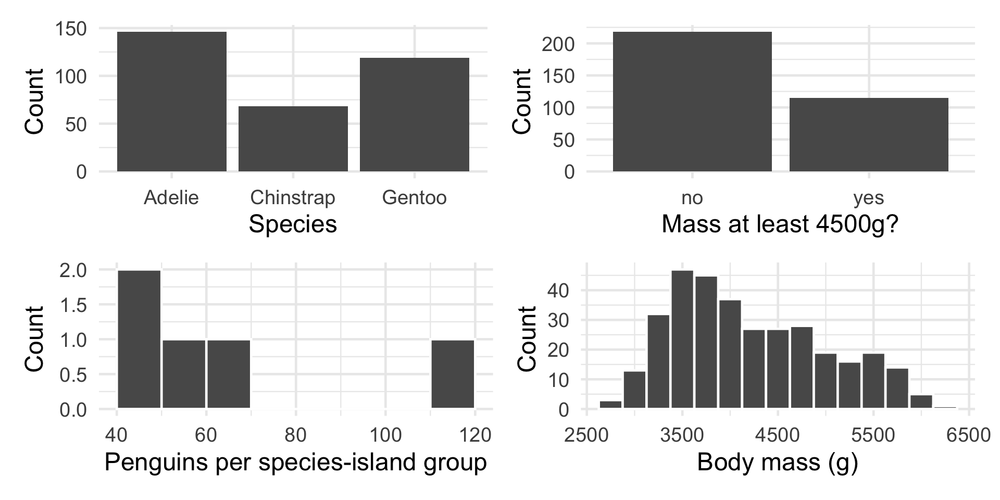
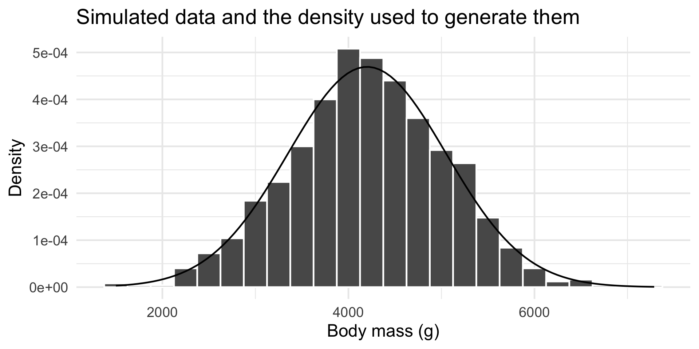
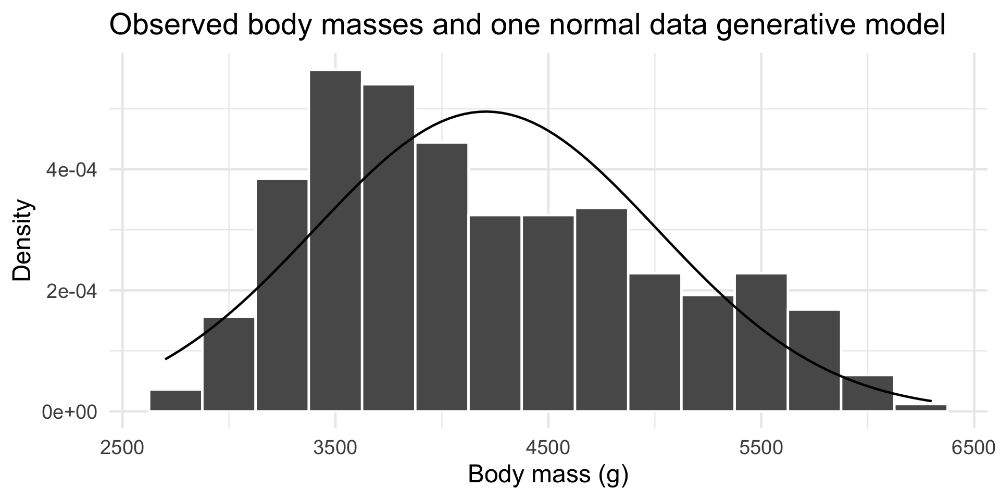
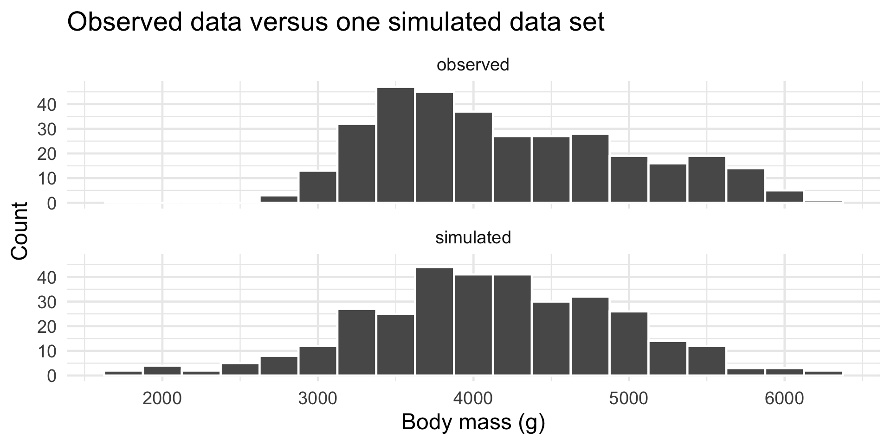
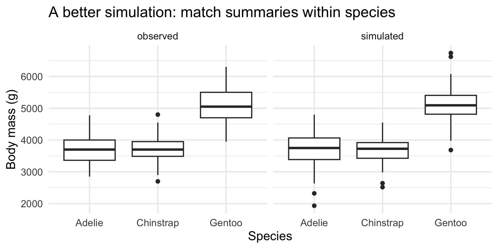
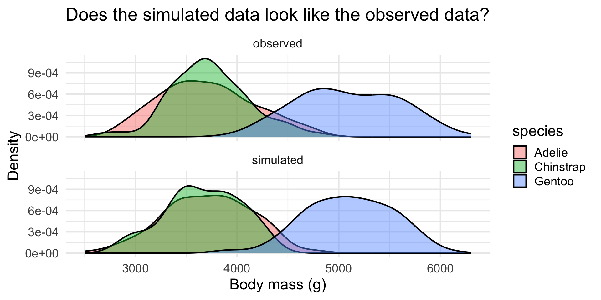
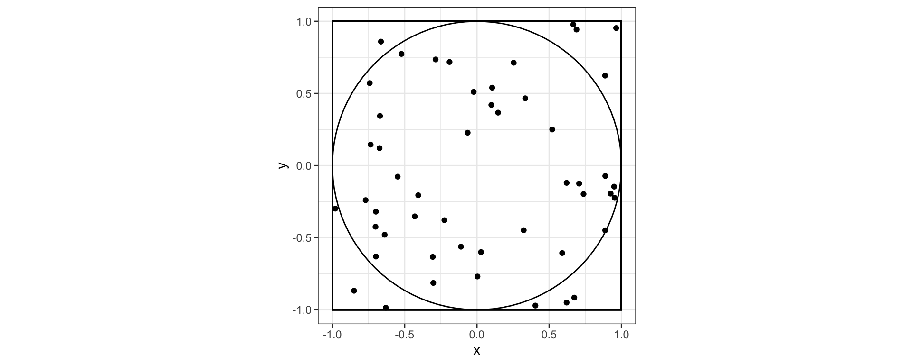

[1] -0.5332687 1.2148825 0.7528894 0.2158501 0.8886568Simulation in R
Dr. Alexander Fisher
Duke University
Today
By the end, you should be able to:
- Explain why simulation is useful in statistical computing.
- Describe a variable’s support: the values it can take.
- Simulate categorical, binary, count, and continuous data.
- Use observed summaries to create simulated data that are “like” real data.
- Use Monte Carlo simulation to approximate quantities.
Why simulation?
Statisticians want to make inferences from data. Simulation lets us
- construct measures of uncertainty/reliability (e.g. confidence intervals via bootstrapping)
- approximate quantities that are difficult to calculate analytically (e.g. integrals using Monte Carlo)
- generate samples from complicated distributions (e.g. Markov chain Monte Carlo)
- construct reference distributions for statistical tests (e.g. sample from the null distribution)
- study the behavior of statistical methods (e.g. bias, power, type I error)
- validate models (simulate from a fitted/proposed model and see whether simulated data resemble the observed data)
and much more!
A lighter starting point
We do not need to start with formal probability theory.
To simulate data, we need to specify:
- the support: what values can occur, and
- the distribution: how frequently different values occur.
Note
A data generative model is a rule for generating data with a particular support.
Random seeds
Simulations use pseudo-random number generators, so the exact simulated values may change each time we run the code.
Our running example
The palmerpenguins data contain measurements on penguins observed near Palmer Station, Antarctica.
The version we’ll work with:
library(tidyverse)
library(palmerpenguins)
set.seed(323)
theme_set(theme_minimal(base_size = 18))
penguins_clean <- penguins |>
drop_na(species, island, bill_length_mm, flipper_length_mm,
body_mass_g, sex) |>
mutate(
large_penguin = body_mass_g >= 4500,
species = fct_drop(species),
island = fct_drop(island),
sex = fct_drop(sex)
)
group_counts <- penguins_clean |>
count(species, island, name = "n_penguins")Look at the data
Rows: 333
Columns: 9
$ species <fct> Adelie, Adelie, Adelie, Adelie, Adelie, Adelie, Adel…
$ island <fct> Torgersen, Torgersen, Torgersen, Torgersen, Torgerse…
$ bill_length_mm <dbl> 39.1, 39.5, 40.3, 36.7, 39.3, 38.9, 39.2, 41.1, 38.6…
$ bill_depth_mm <dbl> 18.7, 17.4, 18.0, 19.3, 20.6, 17.8, 19.6, 17.6, 21.2…
$ flipper_length_mm <int> 181, 186, 195, 193, 190, 181, 195, 182, 191, 198, 18…
$ body_mass_g <int> 3750, 3800, 3250, 3450, 3650, 3625, 4675, 3200, 3800…
$ sex <fct> male, female, female, female, male, female, male, fe…
$ year <int> 2007, 2007, 2007, 2007, 2007, 2007, 2007, 2007, 2007…
$ large_penguin <lgl> FALSE, FALSE, FALSE, FALSE, FALSE, FALSE, TRUE, FALS…Question for today:
Can we use simulation to create artificial penguin data that look like the real data?
Support in the penguin data

p1 <- penguins_clean |>
ggplot(aes(x = species)) +
geom_bar() +
labs(x = "Species", y = "Count")
p2 <- penguins_clean |>
mutate(large_penguin = if_else(large_penguin, "yes", "no")) |>
ggplot(aes(x = large_penguin)) +
geom_bar() +
labs(x = "Mass at least 4500g?", y = "Count")
p3 <- group_counts |>
ggplot(aes(x = n_penguins)) +
geom_histogram(binwidth = 10, boundary = 0, color = "white") +
labs(x = "Penguins per species-island group", y = "Count")
p4 <- penguins_clean |>
ggplot(aes(x = body_mass_g)) +
geom_histogram(binwidth = 250, color = "white") +
labs(x = "Body mass (g)", y = "Count")
(p1 | p2) / (p3 | p4)Variable type versus distribution
| Variable | Support | One possible data generative model | Intuition |
|---|---|---|---|
| species | categorical | sample() |
choose among labels |
| large? | binary | rbinom(size = 1) |
one trial, success/failure |
| # large in 20 | 0, 1, …, 20 | rbinom(size = 20) |
20 independent trials |
| # events | 0, 1, 2, … | rpois() |
events occurring at a rate |
| body mass | real numbers | rnorm() |
values near a center |
Warning
A variable type is not a distribution. An integer could be binomial, Poisson, or something else.
Distributions are data generative modeling choices
rbinom() is natural when we count successes from a fixed number of independent trials with the same probability of success.
Example:
In a group of 20 penguins, how many have body mass at least 4500g?
rpois() is natural when we count events occurring at some average rate.
Example:
How many penguins are observed in a survey period?
Simulating categorical data
A categorical variable takes one of several labels.
[1] "Gentoo" "Chinstrap" "Adelie" "Chinstrap" "Adelie" "Chinstrap"
[7] "Gentoo" "Adelie" "Gentoo" "Gentoo" Use prob = when some categories should occur more often.
From real proportions to simulated species
sim_species <- sample(
x = species_probs$species,
size = nrow(penguins_clean),
replace = TRUE,
prob = species_probs$prob
)
tibble(species = sim_species) |>
count(species) |>
mutate(prop = n / sum(n))# A tibble: 3 × 3
species n prop
<fct> <int> <dbl>
1 Adelie 137 0.411
2 Chinstrap 68 0.204
3 Gentoo 128 0.384Simulating binomial data
The binomial distribution counts successes in a fixed number of independent trials with the same probability of success.
With size = 1, this is binary 0/1 data.
With size = 20, this is count data with support 0, 1, …, 20.
Estimate a binomial probability from data
For a 0/1 variable, the mean is the proportion of 1s.
A binomial count simulation
Suppose we repeatedly sample groups of 20 penguins.
How many penguins in each group have body mass at least 4500g?
Simulating counts with a Poisson data generative model
Count variables often have support
[ 0,1,2,3, ]
A Poisson data generative model is often used for events occurring at an average rate.
Here, lambda controls the mean and variance of the count.
Exercise 1
Show that when the number of trials is large and the success probability is small, a Poisson distribution can approximate a binomial distribution.
A Poisson data generative model
Suppose we count how many penguins are observed in each species-island group.
# A tibble: 5 × 3
species island n_penguins
<fct> <fct> <int>
1 Adelie Biscoe 44
2 Adelie Dream 55
3 Adelie Torgersen 47
4 Chinstrap Dream 68
5 Gentoo Biscoe 119Note
- The
rpois(and other data generative functions) are vectorized. - Vector recycling occurs when there is a mismatch between the number being simulated and the length of the input parameter vector.
Simulating continuous data
Examples:
- body mass
- flipper length
- bill length
For unimodal, symmetric distributions, the normal is a good candidate
R’s four function prefixes
Many distributions in R have four related functions.
| Prefix | Meaning | Example |
|---|---|---|
r |
random generation | rnorm() |
d |
density (continuous) or probability (discrete) | dnorm() |
p |
cumulative probability | pnorm() |
q |
quantiles | qnorm() |
What does a density show?
For a continuous variable, the density curve shows where values are relatively common.
- intervals have probability
- exact points do not
- total area under the curve is 1
Note
The density is high where simulated values are more likely to appear.
Compare a density to simulated values

sim_body <- tibble(
body_mass_g = rnorm(1000, mean = 4200, sd = 850)
)
sim_body |>
ggplot(aes(x = body_mass_g)) +
geom_histogram(aes(y = after_stat(density)),
binwidth = 250, color = "white") +
stat_function(
fun = dnorm,
args = list(mean = 4200, sd = 850)
) +
labs(x = "Body mass (g)", y = "Density",
title = "Simulated data and the density used to generate them")Is this normal a good fit?

body_mean <- mean(penguins_clean$body_mass_g)
body_sd <- sd(penguins_clean$body_mass_g)
penguins_clean |>
ggplot(aes(x = body_mass_g)) +
geom_histogram(aes(y = after_stat(density)),
binwidth = 250, color = "white") +
stat_function(
fun = dnorm,
args = list(mean = body_mean, sd = body_sd)
) +
labs(x = "Body mass (g)", y = "Density",
title = "Observed body masses and one normal data generative model")Simulating data like the data
Suppose we want to create artificial data that are like the observed data.
One simple strategy:
- choose a data generative model,
- estimate its parameters using summaries of the observed data,
- simulate new data from that estimated distribution,
- compare simulated data with observed data.
This is the main idea behind a simple method of moments approach.
Method of moments, informally
A moment is a summary of a distribution.
For today:
- match the observed mean
- match the observed variance
Fit and simulate a normal body-mass data generative model
body_moments <- penguins_clean |>
summarize(
mean_body = mean(body_mass_g),
sd_body = sd(body_mass_g),
n = n()
)
sim_penguins_1 <- tibble(
body_mass_g = rnorm(body_moments$n,
body_moments$mean_body,
body_moments$sd_body)
)
body_moments# A tibble: 1 × 3
mean_body sd_body n
<dbl> <dbl> <int>
1 4207. 805. 333Did the simulation work?

observed_body <- penguins_clean |>
transmute(source = "observed", body_mass_g)
sim_body_1 <- sim_penguins_1 |>
transmute(source = "simulated", body_mass_g)
bind_rows(observed_body, sim_body_1) |>
ggplot(aes(x = body_mass_g)) +
geom_histogram(binwidth = 250, color = "white") +
facet_wrap(~ source, ncol = 1) +
labs(x = "Body mass (g)", y = "Count",
title = "Observed data versus one simulated data set")A problem with the first simulation
Penguin body mass has structure.
One normal curve for all penguins ignores this structure.
Match and simulate within species
species_moments <- penguins_clean |>
group_by(species) |>
summarize(n = n(),
mean_body = mean(body_mass_g),
sd_body = sd(body_mass_g),
.groups = "drop")
sim_penguins_2 <- species_moments |>
rowwise() |>
mutate(body_mass_g = list(rnorm(n, mean_body, sd_body))) |>
unnest(body_mass_g) |>
select(species, body_mass_g)
species_moments# A tibble: 3 × 4
species n mean_body sd_body
<fct> <int> <dbl> <dbl>
1 Adelie 146 3706. 459.
2 Chinstrap 68 3733. 384.
3 Gentoo 119 5092. 501.Compare observed and simulated data

observed_by_species <- penguins_clean |>
transmute(source = "observed", species, body_mass_g)
sim_by_species <- sim_penguins_2 |>
mutate(source = "simulated")
bind_rows(observed_by_species, sim_by_species) |>
ggplot(aes(x = species, y = body_mass_g)) +
geom_boxplot() +
facet_wrap(~ source) +
labs(x = "Species", y = "Body mass (g)",
title = "A better simulation: match summaries within species")Exercise 2
Use method of moments to simulate flipper lengths within species.
Simulating a whole toy data set
We can combine several pieces:
- simulate species using observed species proportions,
- simulate body mass using species-specific normal data generative models,
- combine the simulated variables into one data frame.
Model checking by simulation

obs_plot <- observed_by_species |>
mutate(source = "observed")
sim_plot <- sim_penguins_3 |>
mutate(source = "simulated")
bind_rows(obs_plot, sim_plot) |>
ggplot(aes(x = body_mass_g, fill = species)) +
geom_density(alpha = .45) +
facet_wrap(~ source, ncol = 1) +
labs(x = "Body mass (g)", y = "Density",
title = "Does the simulated data look like the observed data?")What did we build?
We built a data generative model:
- choose a species,
- generate a body mass from a species-specific distribution.
Note
Simulation forces us to be explicit about our assumptions.
Monte Carlo approximation
Monte Carlo approximation means:
approximate a quantity using many random simulations.
The usual pattern is:
- simulate many values,
- calculate something from each simulated value,
- compute the mean of the results.
This turns difficult mathematical calculations into computing problems.
The key idea is that integrals are means, and means are integrals!
Monte Carlo: a history

- Stanisław Ulam developed the idea behind Monte Carlo while recovering in the hospital in 1946, thinking about estimating solitaire outcomes by repeatedly playing simulated games.
Why Monte Carlo?
Consider computing the integral
\[ V = \int h(x) p(x) dx \] where \(p(x)\) is a density.
We could perform numerical integration by computing the Rieman sum of \(h(x)p(x)\) over some fine grid of \(x\).
If \(h(x)p(x)\) is bounded, then a grid of mesh size \(\delta > 0\) gives an \(\mathcal{O}(\delta)\) approximation error.
If \(x\) is one dimensional, then a grid of mesh size \(\delta\) requires \(N = \frac{1}{\delta}\) many grid points.
- If \(x\) has dimension \(p\), then we need \(N = \left(\frac{1}{\delta}\right)^p\) grid points.
By CLT, \(\hat{V}_n = \frac{1}{N} \sum_{i = 1}^N h(X_i)\) where \(X_i \overset{\mathrm{iid}}{\sim} p(x)\) converges to \(V\) at the rate \(\sqrt{N}\), irrespective of \(p\)!
The curse (blessing) of dimensionality 

The picture to have in mind

The area of the unit circle, \(A_\text{circle} = \pi\). We’ll pretend we don’t know and want to estimate \(A_\text{circle}\)
50 random points thrown into the box defined by coordinates (-1, -1), (-1, 1), (1, -1), (1, 1)
39 points land inside, 11 points outside
\(\frac{39}{50} \approx \frac{A_\text{circle}}{A_\text{box}}\)
\(A_{\text{circle}} \approx .78 \cdot 4 = 3.12\)